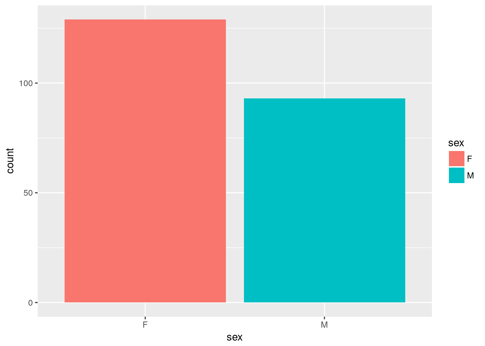
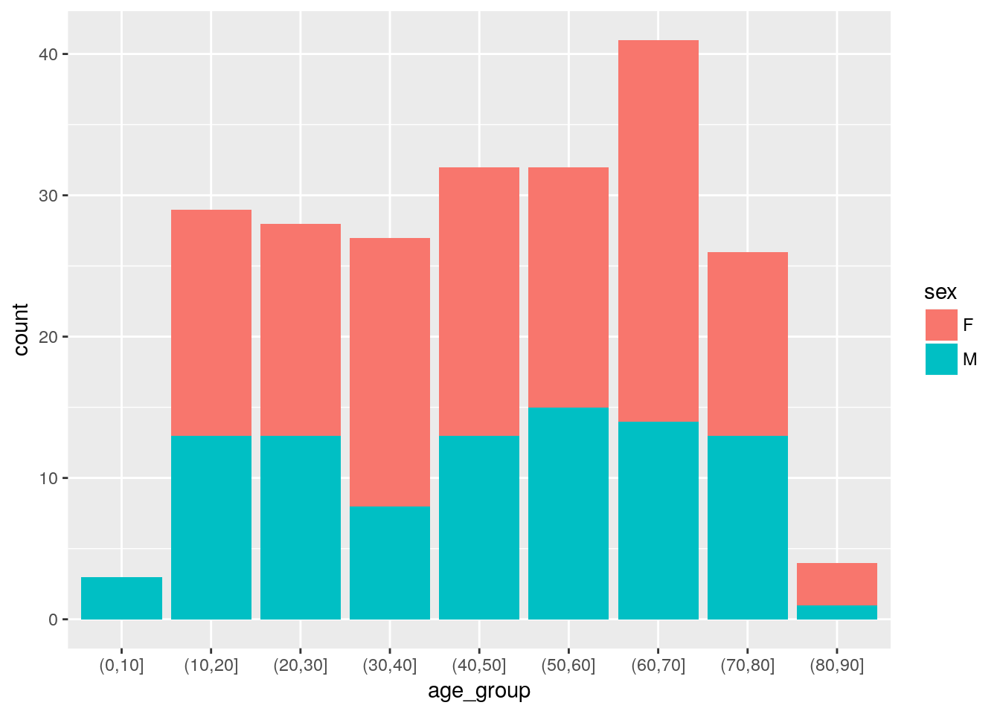
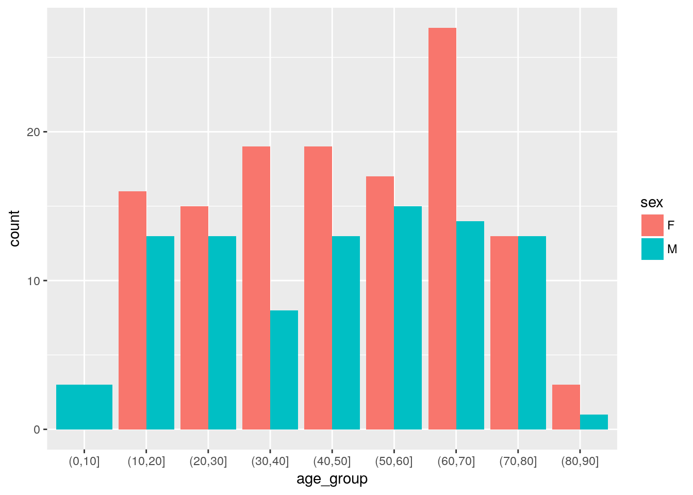
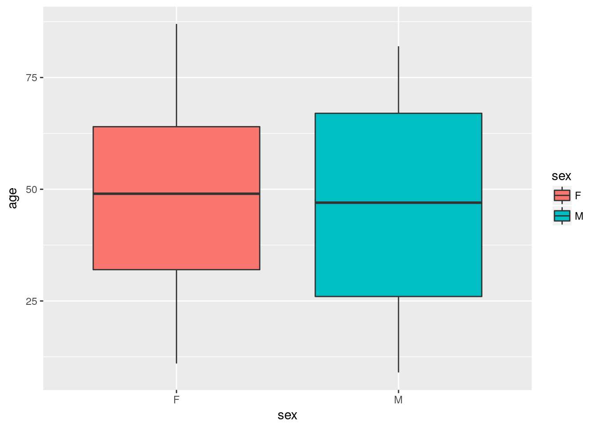
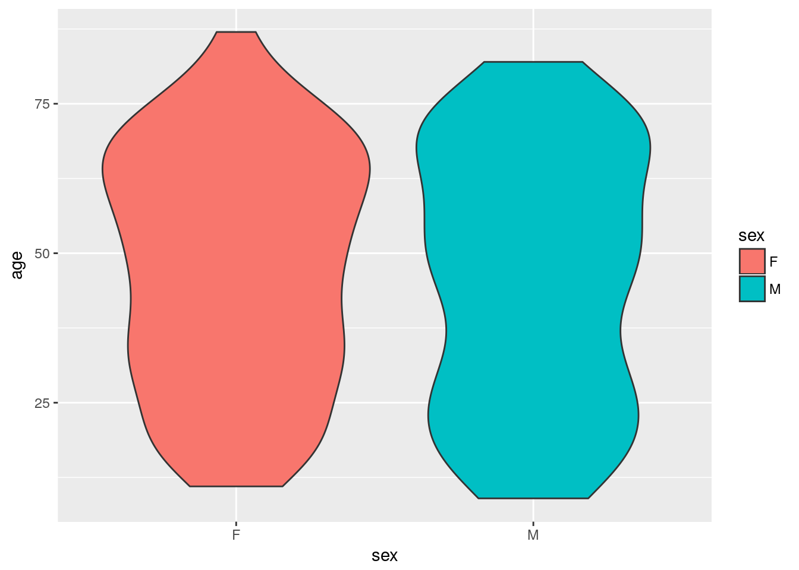
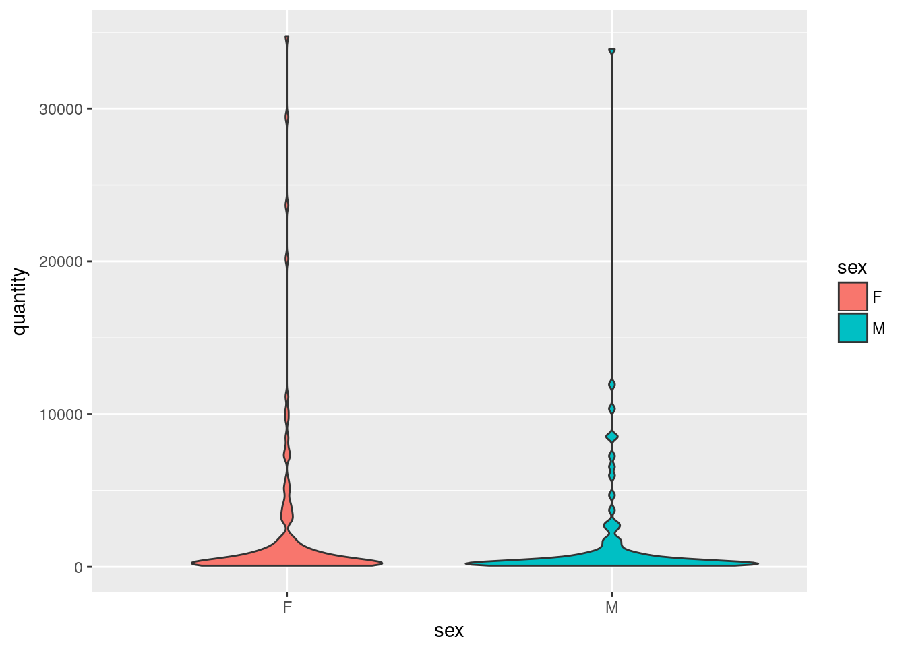
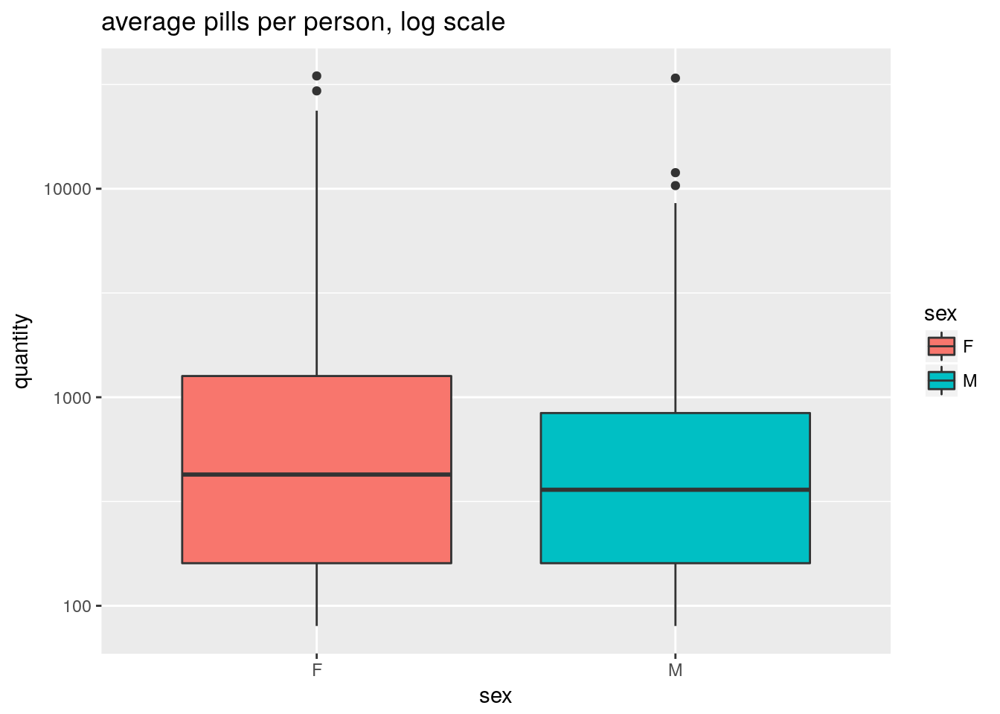

Last updated: 2018-09-20
workflowr checks: (Click a bullet for more information) ✔ R Markdown file: up-to-date
Great! Since the R Markdown file has been committed to the Git repository, you know the exact version of the code that produced these results.
✔ Environment: empty
Great job! The global environment was empty. Objects defined in the global environment can affect the analysis in your R Markdown file in unknown ways. For reproduciblity it’s best to always run the code in an empty environment.
✔ Seed:
set.seed(20180831)
The command set.seed(20180831) was run prior to running the code in the R Markdown file. Setting a seed ensures that any results that rely on randomness, e.g. subsampling or permutations, are reproducible.
✔ Session information: recorded
Great job! Recording the operating system, R version, and package versions is critical for reproducibility.
✔ Repository version: 9ed6290
wflow_publish or wflow_git_commit). workflowr only checks the R Markdown file, but you know if there are other scripts or data files that it depends on. Below is the status of the Git repository when the results were generated:
Ignored files:
Ignored: data/opioid_full.csv
Ignored: data/opioid_people_full.csv
Ignored: docs/figure/
Ignored: explore/
Untracked files:
Untracked: data/df_intersect_r.rda
Untracked: lib/doctorShopper.sql
| File | Version | Author | Date | Message |
|---|---|---|---|---|
| Rmd | 9ed6290 | Dennis Wollersheim | 2018-09-20 | wflow_publish(“analysis/findDoctorShopping.Rmd”) |
| Rmd | eb25ade | Dennis Wollersheim | 2018-09-20 | final doctor shopper definition dialled |
| Rmd | 0f68509 | Dennis Wollersheim | 2018-09-20 | Merge branch ‘master’ of github.com:dewoller/doctor-shopping |
| Rmd | 206a1fa | Dennis Wollersheim | 2018-09-20 | comments and analyis upgrade |
| Rmd | ba10154 | Dennis Wollersheim | 2018-09-20 | push back to dewlap |
| Rmd | e94da48 | Dennis Wollersheim | 2018-09-12 | try out big at alf |
| html | e94da48 | Dennis Wollersheim | 2018-09-12 | try out big at alf |
| html | b07d660 | Dennis Wollersheim | 2018-09-07 | Build site. |
| Rmd | 4bc4137 | Dennis Wollersheim | 2018-09-07 | Merge branch ‘master’ of github.com:dewoller/doctor-shopping |
| Rmd | 128690e | Dennis Wollersheim | 2018-09-07 | localisation to hermoine |
| html | f81be92 | Dennis Wollersheim | 2018-09-07 | Build site. |
| Rmd | b134b10 | Dennis Wollersheim | 2018-09-07 | wflow_publish(“analysis/findDoctorShopping.Rmd”) |
| Rmd | 6f0e63b | Dennis Wollersheim | 2018-09-07 | initial commit |
| html | 6f0e63b | Dennis Wollersheim | 2018-09-07 | initial commit |
| Rmd | 145bd00 | Dennis Wollersheim | 2018-08-31 | Initial _rr analysis with interval join |
Try to find the doctor shoppers from within the pbs
data_source_suffix=''
data_source_suffix='_rr'
data_source_suffix='_r'
intersect_filename = paste0( 'data/df_intersect', data_source_suffix, '.rda')
source('lib/functions.R')
source( "lib/get_data.R")
# -------------------------------------------------
my_db_get_query ( paste0( "
select pin, spply_dt, pbs_code, pbs_rgltn24_adjst_qty as quantity
from pbs", data_source_suffix, "
JOIN pbs_item pi USING (pbs_code)
WHERE pi.atc_code LIKE 'N02A%' ")) %>%
as.tibble() %>%
{ . } -> df_pbs
my_db_get_query ( paste0( " select * from patient", data_source_suffix)) %>%
as.tibble() %>%
mutate( age = 2004 - yob ,
age_group=cut( age, breaks=0:12*10 )) %>%
{ . } -> df_people
my_db_get_query ( paste0( "
select pin, date_of_service as spply_dt, spr, spr_rsp, rpr
from mbs", data_source_suffix,
" where item in ( '00023', '00005', '00053'
) AND
pin in (
select pin
from pbs", data_source_suffix, "
JOIN pbs_item pi USING (pbs_code)
WHERE pi.atc_code LIKE 'N02A%')
")) %>%
as.tibble() %>%
{ . } -> df_mbsfind_multi_script_group <- function (supply_date, ndays ) {
overlap = 5
pos = 1
group_id = 0
rv=c()
while (pos <= length( ndays )) {
start_group = pos
end_date = supply_date[ pos ] + ndays[ pos ] + overlap
pos = pos + 1
in_session=TRUE
while ( (pos <= length( ndays )) &
(supply_date[pos] - overlap < end_date)
) {
end_date = supply_date[ pos ] + ndays[ pos ] + overlap
pos = pos + 1
}
rv = c(rv, rep( group_id, pos - start_group ))
group_id = group_id + 1
}
rv
}if (file.exists( intersect_filename )) {
load( intersect_filename, verbose=TRUE )
} else {
#
df_pbs %>%
mutate( row_id = row_number() ) %>%
group_by( pin ) %>%
arrange( pin, spply_dt ) %>%
mutate( group = find_multi_script_group( spply_dt, quantity)) %>%
group_by( pin, group ) %>%
arrange( pin, spply_dt, group ) %>%
mutate( gl = max( spply_dt ) - min(spply_dt ),
ndays = sum(quantity ),
nscripts = n()) %>%
filter( nscripts > 1 ) %>%
{ . } -> df_pbs_multi_groups
#
#
df_pbs_multi_groups %>%
group_by( pin, group, nscripts ) %>%
summarise( start_date = min( spply_dt ) - 7,
end_date = max( spply_dt ),
quantity = sum(quantity)
) %>%
group_by( pin ) %>%
select( pin, start_date, end_date, group, quantity, nscripts) %>%
nest( start_date, end_date, group, quantity, nscripts, .key=pbs ) %>%
{ . } -> df_pbs_nested
#
#
df_mbs %>%
group_by(pin) %>%
mutate( end_date = spply_dt + 7,
start_date = spply_dt - 7) %>%
select( pin, spr, spply_dt, start_date, end_date) %>%
nest( spr, spply_dt, start_date, end_date, .key=mbs ) %>%
{ . } -> df_mbs_nested
#
#
no_cores <- detectCores() - 1
cluster <- create_cluster(no_cores)
#
df_mbs_nested %>%
inner_join( df_pbs_nested ) %>%
partition(pin, cluster=cluster ) %>%
{ . } -> df_both
#
cluster_library(df_both, c("tidyverse", "IRanges", "fuzzyjoin"))
#
#
df_both %>%
do( joined = interval_inner_join( data.frame(.$mbs),
data.frame(.$pbs),
by=c('start_date','end_date') )) %>%
collect() %>%
ungroup() %>%
unnest() %>%
{ . } -> df_intersect
#
#
#
save(df_intersect, file=intersect_filename)
}Loading objects:
df_intersectGreater than 2 distinct practicioners, less than 10 days per practicioner, greater than 1 scripts
df_intersect %>%
mutate( ndays = end_date.y - start_date.y ) %>%
filter( ndays < 2000 ) %>%
group_by( pin, group, ndays, nscripts ) %>%
distinct( spr ) %>%
count( sort=TRUE) %>%
rename( distinct_spr_n = n ) %>%
mutate( days_per_spr = ndays / distinct_spr_n) %>%
arrange( days_per_spr) %>%
filter( distinct_spr_n > 1 & days_per_spr < 10 & nscripts > 2 ) %>%
group_by( pin ) %>%
count() %>%
{ . } -> df_doctor_shoppers
df_doctor_shoppers %>%
inner_join( df_people ) %>%
{ . } -> df_doctor_shoppersJoining, by = "pin"df_intersect %>%
mutate( ndays = end_date.y - start_date.y ) %>%
filter( ndays < 2000 ) %>%
group_by( pin, group, ndays ) %>%
summarise( quantity = sum( quantity)) %>%
mutate( pills_per_day = quantity / as.integer( ndays) )# A tibble: 9,666 x 5
# Groups: pin, group [9,666]
pin group ndays quantity pills_per_day
<chr> <dbl> <time> <int> <dbl>
1 00003359562 0 " 7 days" 40 5.71
2 00003359562 2 " 7 days" 40 5.71
3 00003359562 3 " 7 days" 40 5.71
4 00005399472 3 18 days 234 13
5 00005399472 4 41 days 400 9.76
6 00005399472 5 58 days 700 12.1
7 00005399472 8 14 days 20 1.43
8 00005399472 9 16 days 20 1.25
9 00005399472 10 " 7 days" 10 1.43
10 00006237413 0 " 7 days" 80 11.4
# ... with 9,656 more rowsdf_doctor_shoppers %>%
ggplot( aes( sex, fill=sex )) +
geom_bar()
df_doctor_shoppers %>%
ggplot( aes(age_group, fill=sex )) +
geom_bar()
df_doctor_shoppers %>%
ggplot( aes(age_group, fill=sex )) +
geom_bar( position='dodge') 
df_doctor_shoppers %>%
ggplot( aes( sex, age, fill=sex )) +
geom_boxplot()
df_doctor_shoppers %>%
ggplot( aes( sex, age, fill=sex )) +
geom_violin()
df_pbs %>%
inner_join( df_people ) %>%
left_join( df_doctor_shoppers, by='pin') %>%
mutate( type = ifelse( is.na(n ), 'use', 'misuse') ) %>%
rename( sex = sex.x, age = age.x, age_group = age_group.x ) %>%
{ . } -> df_combinedJoining, by = "pin"df_combined %>%
filter( type=='misuse' ) %>%
group_by( pin, sex, age, type ) %>%
summarise( quantity = sum( quantity )) %>%
ggplot( aes( sex, quantity, fill=sex )) +
geom_violin() 
df_combined %>%
filter( type=='misuse' ) %>%
group_by( pin, sex, age, type ) %>%
summarise( quantity = sum( quantity )) %>%
ggplot( aes( sex, quantity, fill=sex )) +
geom_boxplot() +
scale_y_log10() + ggtitle ('average pills per person, log scale')
average number of pills / script
df_combined %>%
filter( type=='misuse' ) %>%
group_by( sex ) %>%
summarise( quantity = sum( quantity ) / n())# A tibble: 2 x 2
sex quantity
<chr> <dbl>
1 F 26.9
2 M 30.1df_doctor_shoppers %>%
ggplot( aes( age_group, fill=sex )) +
geom_histogram(stat='count', position='dodge' ) Warning: Ignoring unknown parameters: binwidth, bins, padsessionInfo()R version 3.4.4 (2018-03-15)
Platform: x86_64-pc-linux-gnu (64-bit)
Running under: Ubuntu 17.10
Matrix products: default
BLAS: /usr/lib/x86_64-linux-gnu/openblas/libblas.so.3
LAPACK: /usr/lib/x86_64-linux-gnu/libopenblasp-r0.2.20.so
locale:
[1] LC_CTYPE=en_AU.UTF-8 LC_NUMERIC=C
[3] LC_TIME=en_AU.UTF-8 LC_COLLATE=en_AU.UTF-8
[5] LC_MONETARY=en_AU.UTF-8 LC_MESSAGES=en_AU.UTF-8
[7] LC_PAPER=en_AU.UTF-8 LC_NAME=C
[9] LC_ADDRESS=C LC_TELEPHONE=C
[11] LC_MEASUREMENT=en_AU.UTF-8 LC_IDENTIFICATION=C
attached base packages:
[1] stats4 parallel stats graphics grDevices utils datasets
[8] methods base
other attached packages:
[1] bindrcpp_0.2.2 keyring_1.1.0 RPostgreSQL_0.6-2
[4] DBI_1.0.0 forcats_0.3.0 dplyr_0.7.6
[7] purrr_0.2.5 readr_1.1.1 tidyr_0.8.1
[10] tibble_1.4.2 ggplot2_2.2.1 tidyverse_1.2.1
[13] multidplyr_0.0.0.9000 IRanges_2.12.0 S4Vectors_0.16.0
[16] BiocGenerics_0.24.0 lubridate_1.7.4 workflowr_1.1.1
[19] pander_0.6.2 kableExtra_0.9.0 knitr_1.20
[22] stringr_1.3.1 wrapr_1.5.1 nvimcom_0.9-75
loaded via a namespace (and not attached):
[1] Rcpp_0.12.18 lattice_0.20-35 utf8_1.1.4
[4] assertthat_0.2.0 rprojroot_1.3-2 digest_0.6.15
[7] R6_2.2.2 cellranger_1.1.0 plyr_1.8.4
[10] backports_1.1.2 evaluate_0.10.1 httr_1.3.1
[13] pillar_1.3.0 rlang_0.2.1 lazyeval_0.2.1
[16] readxl_1.1.0 rstudioapi_0.7 whisker_0.3-2
[19] R.utils_2.6.0 R.oo_1.22.0 rmarkdown_1.10
[22] labeling_0.3 munsell_0.5.0 broom_0.5.0
[25] compiler_3.4.4 modelr_0.1.2 pkgconfig_2.0.1
[28] htmltools_0.3.6 tidyselect_0.2.4 fansi_0.2.3
[31] viridisLite_0.3.0 crayon_1.3.4 R.methodsS3_1.7.1
[34] grid_3.4.4 nlme_3.1-137 jsonlite_1.5
[37] gtable_0.2.0 git2r_0.23.0 magrittr_1.5
[40] scales_0.5.0 cli_1.0.0 stringi_1.2.3
[43] xml2_1.2.0 tools_3.4.4 glue_1.3.0
[46] hms_0.4.2 yaml_2.1.19 colorspace_1.3-2
[49] rvest_0.3.2 bindr_0.1.1 haven_1.1.2 This reproducible R Markdown analysis was created with workflowr 1.1.1